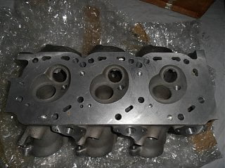
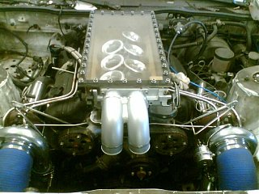

-
Ok so I have a 1984 rx7 that I am building into a Silver State Road race type of car also to be driven on the street but not a daily. I have a NA vg30 motor with v52 heads and now I have gotten a vg33 out of a wrecking yard from a Xterra. I want to build a 600-900hp motor for the car here is some of the parts I am looking at using.
Vg33 block bored 1mm over.
Brc custom forged pistons
Vg30de crankshaft
eagle h beam rods
I have a 300zx intake manifold and am going to fabricate a square top intake with gm twin blade throttle body I have also began making trumpets for the inside
ARP main studs head studs flywheel bolts
Ferrea 1mm oversize valves intake and exhaust
OWO welded short turn ported heads
I want to fill the block up to water plugs
Port the water passages
Custom headers built for holset hx52 13cm turbine single turbo
For oiling I have a four stage dry sump pump and want to run dry sump. I figure road race motors need serious oiling and cooling so no brainer but pain in the rear.
I want to cryo the block and crank to give it good wear resistance
the questions I have are
What is the maximum cam lift and is that limited by heads or stock cam core? If stock cam core could I just make some new cam cores and have them ground more aggressively.
I have been trying to figure out how to modify the crank from cross drilled oiling but EPR does not do cranks alone I called and regardless of engine not much exists on what to plug and where to drill. i have seen on Subaru forums people drill extra holes 90 degrees to current ones to help alleviate high rpm problems with oil delivery.
I wanted to eliminate the hydraulic lifter aspect and shim them out. I have converted the stock rockers to adjustment screw so as to be able to set lash. Will just putting spacers in the lifters work successfully and will the top end oil well.
Are the roller rockers still available.
Also bottom end would cry treating and l19 studs be enough or should I start working on a girdle/ and if girdle then steel main caps with a steel plate like EPR or just a full skirt girdle like Buick v6 uses to tie the sides in.
Not much info exists on imsa girdles and I have no pictures of any would you guys have any or have any of you made girdles.
Initially I was going to do a Buick v6 alas that girdled could handle 700hp but for drag not road race that needs the 4000 dollar block. -
Good luck on your build.Call JWT for your new cams,if you want Regrind call SCHNEIDER CAMS they have 5 stages,I have the stage 4,280-70H. -
Doesn't EPR offer some girdles? -
It sounds like you could benefit from talking to an experienced engine builder. EP Racing is a good start and Mitch will be able to answer nearly all of these questions.
As for cam regrinds, Schneider is a good option. But don't forget about Isky Cams - talk to Ron and they can get your set up with a decent grind for your needs.'86 300ZXT GLL
'78 Datsun 280Z BP
'11 Saab 9-3 Aero XWD -
Yes, I would start with EP Racing, particularly for porting and anything else they do to the heads to improve breathing, a basic port job will not do it. While a race engine has to be reliable and have reasonable life, if it doesn't breathe well then it won't make power so it's basically junk. Been there done that. In addition to the heads the inlet manifold with it's siamesed ports needs replacing with a fabricated six separate inlet tracts job, that in turn will dictate what will be needed for a completely new plenum.
Any failure to optimise inlet flow from the plenum to the combustion chamber will result in less power, it's as simple as that. -
Siamesed ports?Originally posted by 260DET View Post
Last edited by PegCityZ; 04-10-2017, 08:58 PM. -
I was interested in using the stock 300zx lower intake with the water ports welded up with new fuel rails I wanted to fab up a completely new upper intake and use velocity stacks in the plate that would mount to the lower intake. I would then make the upper intake a rectangular manifold with a twin blade throttle body to keep the engine height low it would be forward mounted throttle body not rearward like a 300 zx. The lower intake seems very straight and easy to port, what do you thing would be the benefit to individual runner besides size of runner and possibly weight? -
I think 260z means that the runners are cast in a line where racing intakes have individual tube runners.
-
I didn't even consider gutting or using the upper intake at all it seems easier to fabricate something clean and from the ground up and since I don't need a rear mount TB it matters even less.
-
I looked at the EPR girdle it is interesting but it looks like what I have seen in US v8 motors which is billet main caps and then he uses the plate halo to stiffen and prevent cap sway. Still it seems like that could fret and move albeit at a much higher horsepower (it still leaves like over 100 horsepower per stud to hold to the block. There seems to have been discussion about the block main webbing on the vg30 being not all that tough. I have to say that relative to like a Buick v6 the Nissan main webbing looks like it could take a nuke. The Buick also when they fail would split block and not just get cracks. I have been interested in making a girdle inspired by this design which I believe I could machine accurately and tie into the block. I mean is it overkill , Yes! but motors are not cheap even when you can bore and hone them yourself. This girdle would also not require huge plate steel to make it out of or casting facilities like the original IMSA Nissan design. What do you guys think. The VG has a awesome feature to it vs. V8 design, no pesky specialty shaped main caps some of the v8 motors have crazy rear main caps that cost huge amounts of time to make. What do You guys think.
http://classicoldsmobile.com/forums/…ldsmobile.html -
-
I know it is not a Z but it is Japanese and man that is a nice engine compartment
-
I cant bring myself to run a rotary it does only have 7 moving parts but like 1 million seals which is what usually lets go. I had mine with a street port 12a but the motor wen 160,000 miles. Seems that the outer rotor housings only really last to 150000 miles and I have build plenty regular motors so I thought as a small v6 this would make a nice motor.
-
I have a few inlet tract pics that could help but they are in a BMP format and are too big to post. Here is a pic of a Nismo head and as you can see they are quite different and heaps better than the standard ones, there were a few of these around but that was a while ago. -
Found another postable pic on my crowded hard drive, I have no info on this at all but it looks like a road car. This is a great setup, note the twin plenum intakes which should ensure an even distribution to both banks.

Copyright © 2006–. All rights reserved. Privacy Policy